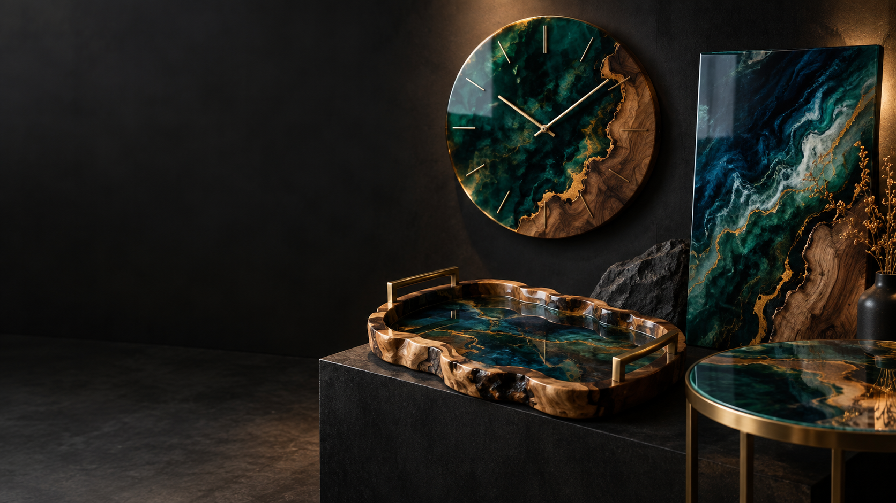

ИЗДЕЛИЯ ИЗ ЭПОКСИДНОЙ СМОЛЫКрасота — впривычных вещахСмотреть изделия
изделия
Основа — натуральное дерево и эпоксидная смола. Сначала подбираются форма, оттенки и фактура, затем смола заливается слоями и оставляется до полного застывания.
для дома
Часы, подносы, столики, картины и другой декор из дерева и эпоксидной смолы.
Открыть каталог 02
02